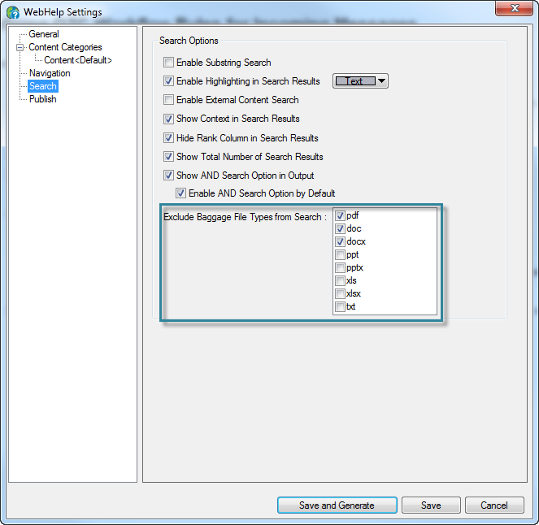
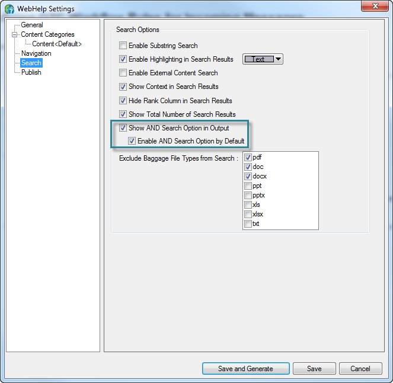
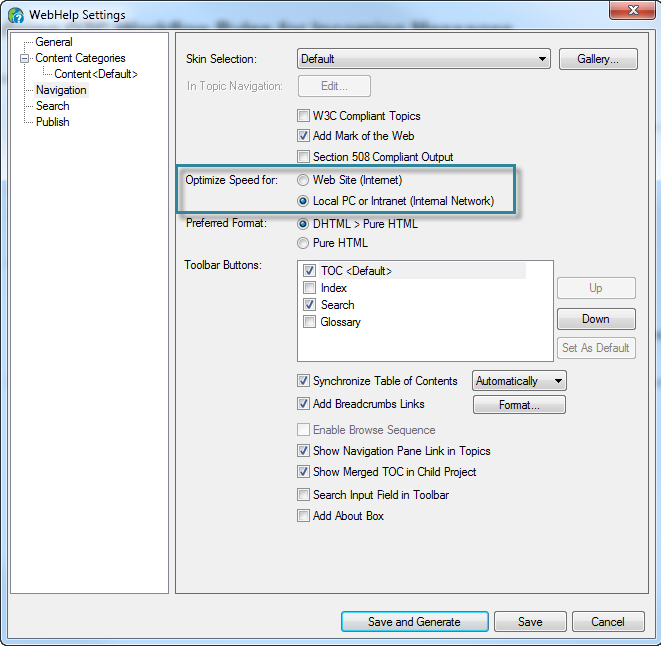
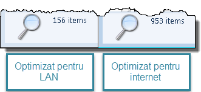
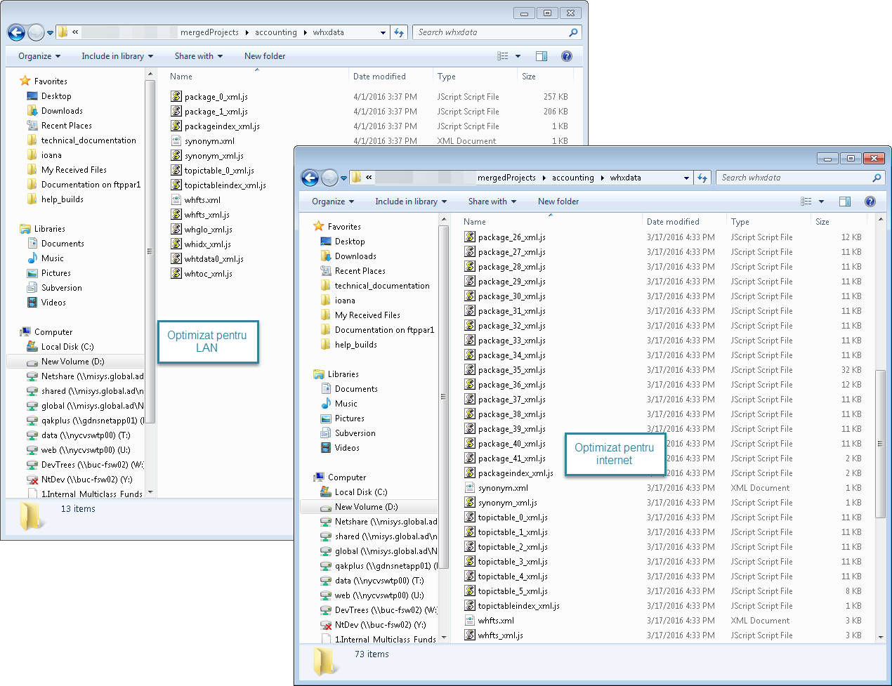
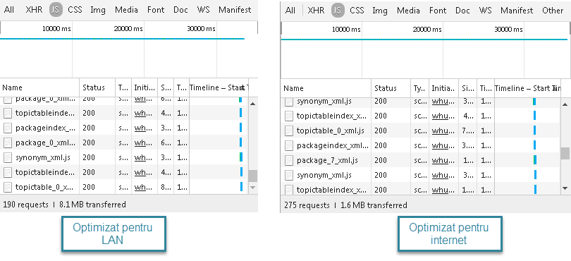

RoboHelp: Search Optimization
Published: 2016-03-27
The background¶
We have a rather large online help system - about 6000 topics in 40 separate modules - generated using RoboHelp, in WebHelp format, and delivered both on a website and as an MSI.
The problem¶
The search takes too much - 25-30 seconds when run on the server. If the help is installed locally, the search is much faster, but most of the clients use the website.
The reasons¶
After a few rounds of testing and a lot of googling, I reached the conclusion that the biggest culprit is the RoboHelp search (but some structural improvements in the content wouldn't hurt either).
The solutions¶
Because content changes are more difficult to implement in the short term, I started testing various options fpr optimizing the search.
Attempt no. 1: No PDF and Word searches¶
Because each module has a PDF version that contains the same stuff as the online help, I first excluded all such documents from the search.

Result: no performance improvement. (But I still think it was a good idea, because we are avoiding duplicate content in the searches.)
Attempt no. 2: Search on all terms by default¶
Because RoboHelp 2015 has a new option for this, I enabled "AND" search by default in all modules.

Result: no performance improvement (but I wasn't expecting one anyway). I don't know why we had to wait so many years for such an obvious setting, but better late than never, I guess. Now the search should be working like everybody probably imagined it was working already.
Attempt no. 3: Optimize for LAN¶
Yeah, it's not really intuitive, after all we are publishing to the internet. Well, apparently the option kept its name from the dial-up days...
Some background first: to enable the search functionality, RoboHelp generates some files (with names like package__n__xml.js) in the folder whxdata. Every search loads every one of these files... so the more files, the more requests to the server and the slower everything runs. Here is where our option comes in: when the output is optimized for internet, RoboHelp generates more, smaller package files (because this was more efficient in the old days, I guess); when the output is optimized for a local network, RoboHelp generates fewer, larger package files.

So... I started comparing, after I generated the entire help system with each of the options:
-
A search in Windows for the
package*.jsstring, in the entire help system: the LAN-optimized version has 6 times fewerpackagefiles.
-
A comparison at the merged project level: the LAN-optimized version has 6 times fewer files in the
whxdatafolder and there are 2packagefiles instead of 41.
-
A comparison in Chrome Developer Tools: in the LAN-optimized version there are 190 requests, compared to 275 in the internet-optimized version.

The questions (for which I don't yet have clear answers):
-
Why aren't there 6 times fewer requests? After a quick analysis in Developer Tools, I gathered that, for each module, at least 5 requests are sent:
packageindex_xml.js,package_0_xml.js,synonym_xml.js,topictableindex_xml.jsandtopictable_0_xml.js, so there comes a point when the only way of improving the performance is reducing the total number of modules. -
Why is 5 times more data being downloaded when the content is optimized for LAN, especially considering that fewer requests are sent?
Result: an almost insignificant performance improvement, far less than I was hoping for.
The final conclusion¶
After a month of testing, I know way more about the RoboHelp search... and I managed to improve the search by whooping 5 seconds (on days with a good connection).
What next?¶
Two things: * Consolidating modules - fewer modules, fewer files, fewer requests, faster search. * Implementing an external search - Google custom search or Zoom Search.